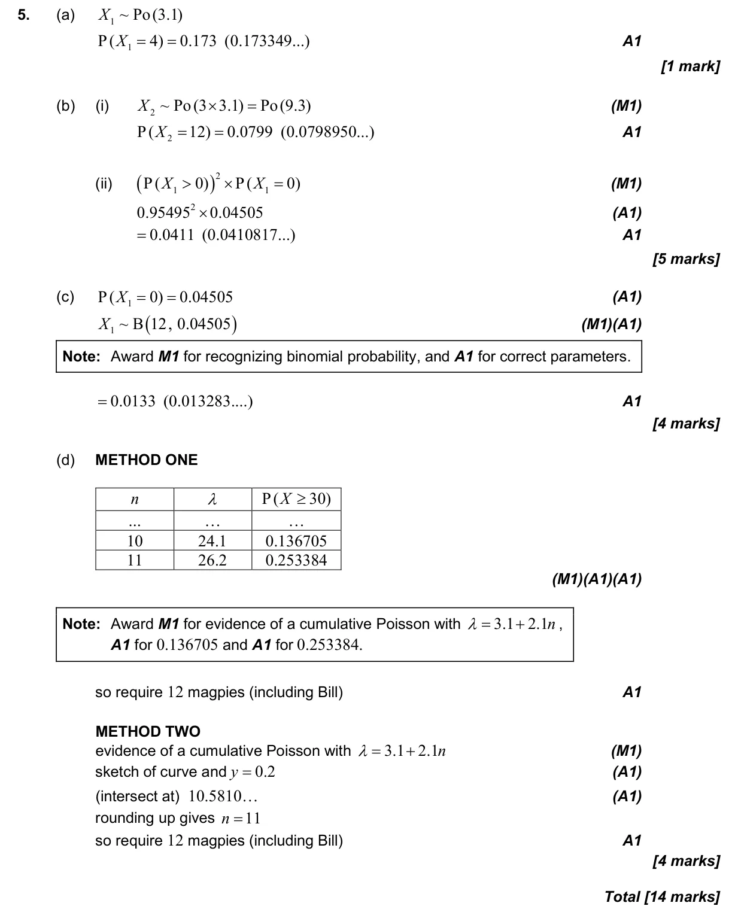

14 marks P2 TZ2 Calculator 4.17 The Poisson distribution4.6 Combined, mutually exclusive, conditional, independence and probability diagrams4.8 Binomial distribution Question Hide breakdown abcd Markscheme 